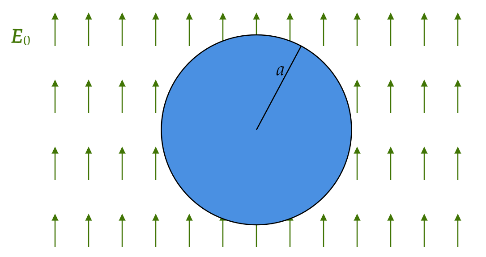

A very long cylinder of linear dielectric material is placed in an otherwise uniform electric field $\mathbf{E}_0 $.
Find the resulting field within the cylinder.
(The radius is $a $, the susceptibility $\chi _e $, and the axis is perpendicular to $\mathbf{E}_0 $).
Notie the uniformity of the field. Suppose it points in the $\hat{\mathbf{x}} $ direction. The picture below shows a cross-section of the cylinder and the background $\mathbf{E}_0 $ field.
If we find the potential, we can find the field.
We will have to solve Laplace's equation. To do so, let's first write down the relevant boundary conditions:
(BC1) At $s=a $, we have
\[\epsilon \frac{\partial V_{\text{in} }}{\partial s}=\epsilon _0\frac{\partial V_{\text{out} }}{\partial s} \](BC2) At $s=a $ again, we have
\[V_{\text{in} }=V_{\text{out} } \](BC3) When $s $ is much larger than $a $, we should only experience a contribution from the external (uniform) field. We know what the field is. We see that
\[V_{\text{out} } \approx -E_0 s \cos \left( \phi \right) \]Where $\phi $ will be measured from the direction of the uniform $\mathbf{E}_0 $ field. Notice that this physically means that we can move perpendicularly to the field.
Let's recall the general solution to Laplace's equation in Cylindrical coordinates (with $z $-symmetry):
\[V(s,\phi )=a_0 +b_0 \ln s + \sum_{k=1}^{\infty } \bigg( s^k \left[ a_k \cos \left( k\phi \right) +b_k \sin \left( k\phi \right) \right] + s^{-k} \left[ c_k \cos \left( k\phi \right) +d_k\sin \left( k\phi \right) \right] \bigg) \]Inside: The $s^{-k} $ terms must go away, or the potential will explode. The same holds for the log term. We can safely ignore the constant term. We now have a cleaner expression:
\[V_{\text{in} }=\sum_{k=1}^{\infty } s^{k}\bigg( a_k\cos \left( k\phi \right) +b_k \sin \left( k\phi \right) \bigg) \]Outside: The $s^{k} $ terms must go away, as well as the log term. Both of them will explode as $s\rightarrow \infty $. The constant term here will make use of the third boundary condition, since $s>>a $ implies $s\rightarrow \infty $ and at this point we can ignore all the $s^{-k} $ terms.
\[V_{\text{out} }=-E_0s \cos \left( \phi \right) +\sum_{k=1}^{\infty } s^{-k}\bigg( c_k\cos \left( k\phi \right) +d_k \sin \left( k\phi \right) \bigg) \]The continuity condition (BC2) implies
\[\sum_{k=1}^{\infty } s^{k}\bigg( a_k\cos \left( k\phi \right) +b_k \sin \left( k\phi \right) \bigg) \Big|_{s=a}=-E_0s \cos \left( \phi \right) +\sum_{k=1}^{\infty } s^{-k}\bigg( c_k\cos \left( k\phi \right) +d_k \sin \left( k\phi \right) \bigg)\Big|_{s=a} \]Evaluated at $s=a $, that is:
\[\sum_{k=1}^{\infty } a^{k}\bigg( a_k\cos \left( k\phi \right) +b_k \sin \left( k\phi \right) \bigg) =-E_0a \cos \left( \phi \right) +\sum_{k=1}^{\infty } a^{-k}\bigg( c_k\cos \left( k\phi \right) +d_k \sin \left( k\phi \right) \bigg)\]While continuity of the derivatives (BC1) implies
\[\epsilon \sum_{k=1}^{\infty }k s^{k-1}\bigg( a_k\cos \left( k\phi \right) +b_k \sin \left( k\phi \right) \bigg)\Big|_{s=a} = \left[ -E_0 \cos \left( \phi \right) -\sum_{k=1}^{\infty }k s^{-k-1}\bigg( c_k\cos \left( k\phi \right) +d_k \sin \left( k\phi \right) \bigg) \right] \epsilon _0 \Big|_{s=a}\]Evaluated at $s=a $, that is:
\[\epsilon _r\sum_{k=1}^{\infty }k a^{k-1}\bigg( a_k\cos \left( k\phi \right) +b_k \sin \left( k\phi \right) \bigg) = -E_0 \cos \left( \phi \right) -\sum_{k=1}^{\infty }k a^{-k-1}\bigg( c_k\cos \left( k\phi \right) +d_k \sin \left( k\phi \right) \bigg) \]Where I used $\epsilon _r $ rather than $\epsilon ,\epsilon _0 $ separately. The only coefficients that will remain are $a_1 $ and $c_1 $.
We get two relations between $a_1 $ and $c_1 $, each from each of the first two boundary conditions. We get the following (linear) system:
\begin{align*} E_0 &= -\epsilon _r a_1 -a^{-2} c_1 \\ E_0 a &= -aa_1 +a^{-1} c_1 \end{align*}That is:
\[\begin{pmatrix} E_0 \\ E_0 a \\ \end{pmatrix} =\begin{pmatrix} -\epsilon _r & -a^{-2} \\ -a & a^{-1} \\ \end{pmatrix} \begin{pmatrix} a_1 \\ c_1 \\ \end{pmatrix} \]Where $a $ is a constant (radius), not denoting any of the $a_k $ coefficients. Solve for $a_1 $ and $c_1 $ using your preferred method for linear systems, and we find:
\begin{align*} a_1 &= -\frac{2E_0}{1+\epsilon _r} \\ c_1 &= \frac{a^2 (E_0 \epsilon _r-E_0 )}{1+\epsilon _r} \end{align*}So
\begin{align*} V_{\text{in} } &= -\frac{2E_0 }{1+\epsilon _r}s\cos \left( \phi \right) \\ &= -\frac{2E_0 }{1+\epsilon _r}x \end{align*}Where I switched to cartesian, as it will be quicker to find the field:
\begin{align*} \mathbf{E}_{\text{in} } &= -\frac{\partial V_{\text{in} }}{\partial x}\hat{\mathbf{x}} \\ &= \frac{2E_0 }{1+\epsilon _r}\hat{\mathbf{x}}\\ &= \frac{2\mathbf{E}_0 }{1+\epsilon _r} \end{align*}